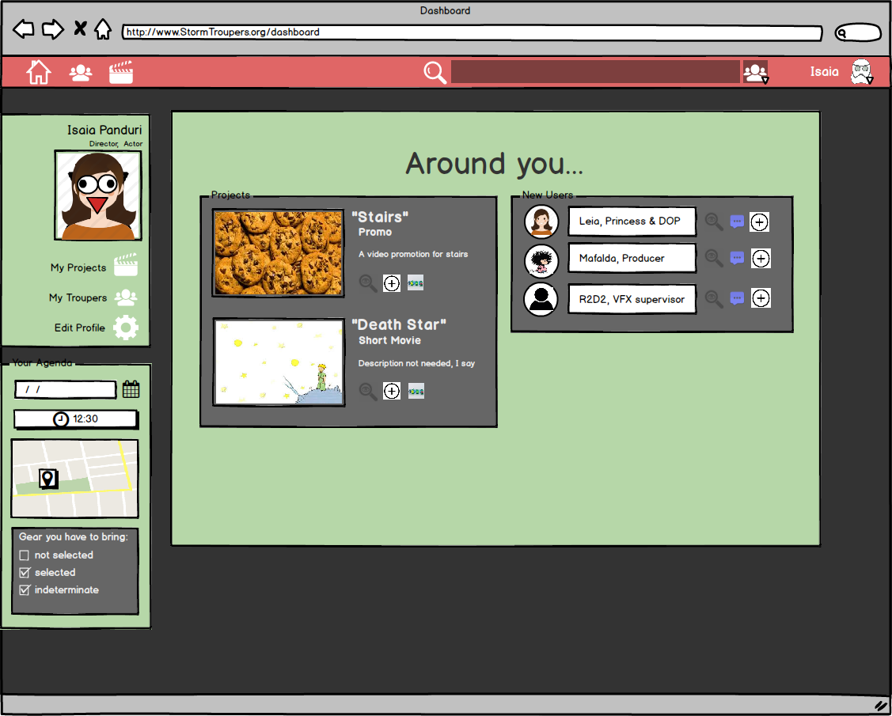
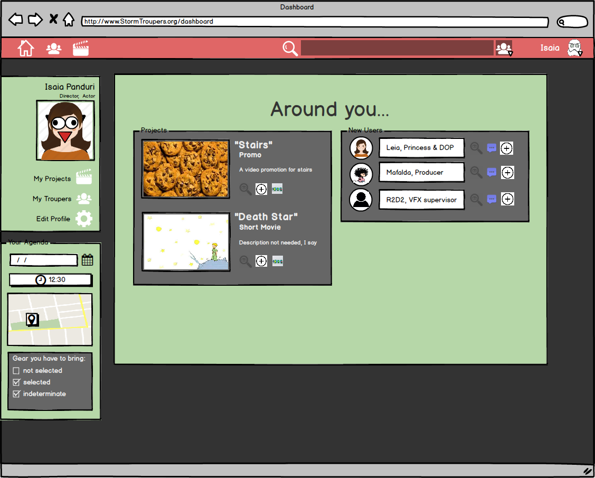

Repository sito di progetto: https://github.com/SoNet-2017/StormTroupers
Repository progetto: https://github.com/SoNet-2017/StormTroupers-code
| Matricola | Nome | Cognome | Github | |
|---|---|---|---|---|
| 239432 | Matilde | Ugolini | matilde.ugolini@gmail.com | mugolini4 |
| 244221 | Edoardo | Battegazzorre | play.different@alice.it | PlayDifferent90 |
| 233534 | Giancarlo | Avalle | s233534@studenti.polito.it | s233534 |
Date le difficoltà di molti giovani cineasti di formare delle troupe capaci e disponibili alla
realizzazione
di prodotti audiovisivi e le difficoltà nella gestione della pre-produzione e della produzione da parte
di
produzioni di vario genere, dalle più piccole produzioni indipendenti alle più grandi produzione
cinematografiche,
vogliamo proporre una piattaforma che unisca la ricerca di figure competenti in campo cinematografico
alla conseguente gestione del flusso di lavoro della pre-produzione e produzione una volta creata la
troupe.
E' proprio questa integrazione di funzionalità che ci differenzia dai nostri
competitors, specializzati o nella ricerca, comunque non geolocalizzata come è nostra intenzione fare,
o nella gestione di documenti di pre-produzione. Noi intendiamo fornire un aiuto completo alla gestione
della produzione giorno per giorno, tramite un calendario di lavoro condiviso, un'agenda personale
dinamica, l'ordine del giorno e altre funzionalità utili ad una produzione di qualsiasi dimensione.
Inoltre forniremo ai nostri utenti anche degli utili template per la redazione dei vari documenti e
scritti
per ogni momento della produzione.
Il nostro target è formato da cineasti, in particolar modo amatori e indipendenti che possano avere la necessità di ricercare figure competenti mancanti all'interno della loro troupe, ma anche a professionisti alla ricerca di figure nuove da inserire in troupe ben rodate. Inoltre ci proponiamo a tutte le troupe con il desiderio di avere a disposizione una piattaforma che possa semplificare loro la gestione del flusso di lavoro legato alla produzione di materiale audio-visivo.
Lavora per piccole e medie produzioni come runner e saltuariamente come aiuto regia ed ambisce, un giorno, a diventare regista. Appassionato di tecnologia, preferisce risparmiare su vezzi per potersi permettere l'acquisto di attrezzatura audio/video, percependo un reddito medio. Ha una vita sociale regolare.
Studia composizione presso il Conservatorio di Torino. Appassionata di cinema, il suo sogno è quello di diventare compositrice di colonne sonore, come il suo mito musicale Ennio Morricone. Per acquisire esperienza ed arricchire il proprio profilo professionale, vorrebbe partecipare a qualche piccola produzione cinematografica per curarne le musiche ed eventualmente progettarne il suond design. Ragazza attiva ed energica, è sempre in cerca di nuove sfide e di nuovi progetti a cui partecipare. Non teme le distanze, essendo abituata a spostarsi per via della vita da pendolare che conduce per motivi di studio.
Spinto dal desiderio di realizzare un suo progetto cinematografico che si porta dentro da lunga data,
Isaia Panduri inizia la ricerca di una troupe da
coinvolgere e con cui lavorare. Purtroppo tutte le figure competenti con cui lavora nella casa di
produzione cinematografica, sono principalmente
professionisti che lavorano solo dietro compenso.
Per superare la difficoltà avrebbe bisogno di una piattaforma che filtri figure amatoriali o
indipendenti da professionisti con cachet troppo elevati.
| Funzionalità complete | Descrizione |
|---|---|
| Profilo | Il profilo permette di fare il login, di creare una propria pagina personale, proporsi e partecipare ai progetti, caricare il proprio portfolio e farsi conoscere dagli altri utenti. |
| Ricerca | La ricerca permette ai produttori dei progetti di cercare e proporre il proprio progetto ad altri utenti nelle varie maestranze che compongono una troupe cinematografica. |
| Template | La funzione template permette di realizzare i vari documenti necessari a tutte le fasi di produzione tramite comodi modelli pre composti e condivisi già con tutti i membri della progetto per creare uno standard unico per facilitare il lavoro delle varie troupe. |
| Gestione progetto | Questa macrofunzione contiene tutte le componenti necessarie al coordinamento della troupe durante i giorni di lavorazione del progetto tra cui il calendario condiviso, la chat e altre funzionalità. |
| Funzionalità | Descrizione | Riferimento funzionalità completa | Da implementare |
|---|---|---|---|
| Iscrizione e login | Permette l'iscrizione al social network e di utilizzare le funzionalità del nostro social | Profilo | SI |
| Inserimento dati personali | Permette all'utente di caricare i propri dati personali per farsi conoscere dagli altri utenti, creare progetti e cercare proposte | Profilo | SI |
| Portfolio | Permette di inserire un proprio portfolio nel proprio profilo | Profilo | SI |
| Ricerca per filtri | Permette la ricerca delle varie professionalità tramite filtri avanzati: ruolo, esperienza, cachet, disponibilità temporale, geolocalizzazione, feedback | Ricerca | SI |
| Soggetto | Offre un modello condiviso del soggetto che permette ai membri della troupe di leggere il soggetto | Template | NO |
| Sceneggiatura | Offre un modello condiviso della sceneggiatura che permette ai sceneggiatori e al regista eventuali modifiche che si propagano a tutti i membri della troupe | Template | SI |
| Copione | Offre un modello condiviso che si autoimplementa dalla sceneggiatura in base al ruolo coperto dai vari attori | Template | SI |
| Storyboard | Offre un modello condiviso dello storyboard che permette ai membri della troupe di consultarlo durante le riprese, possibilità di applicare un filtro che permetta di vedere lo storyboard delle sole scene da girare nella giornata | Template | SI |
| Shot List | Offre un modello condiviso della lista delle riprese da fare durante la giornata di lavoro, condiviso con tutti i membri della troupe e del cast attoriale | Template | SI |
| Lista costumi/Oggetti di scena | Offre un modello condiviso che elenca giorno per giorno dei costumi e degli oggetti di scena, utile per l'organizzazione dei production designer e per tutte le maestranze e gli aiuti che lavorano sul set | Template | SI |
| Fogli di budgeting | Offre un modello condiviso utile alla produzione per la gestione economico del progetto giorno per giorno | Template | NO |
| Modulistica varia | Offre vari modelli condivisi su tutti quei moduli utili alla produzione, come le liberatorie | Template | NO |
| Call sheet/ODG | Offre un modello condiviso dell'ordine del giorno per permettere a tutti i membri della troupe di conoscere i compiti e le scene in lavorazione giorno per giorno durante la lavorazione del progetto | Template | SI |
| Calendario di lavoro condiviso | Offre un calendario che permette ad ogni membro della troupe di conoscere le proprie mansioni giorno per giorno durante la lavorazione del progetto, collegato con l'ordine del giorno e l'agenda personale | Gestione progetto | SI |
| Agenda personale | Offre dei reminder personali con specifici compiti per ogni membro della troupe, collegato con l'ordine del giorno e del calendario condiviso | Gestione progetto | SI |
| Chat personale | Chat tra i membri della troupe per la gestione del progetto durante la realizzazione | Gestione progetto | SI |
| Utente | Sesso | Età | Profilo |
|---|---|---|---|
| Utente #1 | Femmina | 26 | studentessa di Ingegneria del Cinema |
| Utente #2 | Femmina | 21 | studentessa di Architettura |
| Utente #3 | Femmina | 21 | studentessa di Architettura |
| Utente #4 | Maschio | 29 | laureato presso la facoltà di Fisica |
| Utente #5 | Maschio | 29 | ricercatore di Storia persso l'Università degli Studi di Torino |
| Utente #6 | Femmina | 24 | studentessa di Ingegneria Biomedica |
| Utente #7 | Femmina | 24 | studentessa di Ingegneria Elettronica |

 
